WEEK 3: THE TALK, PART 2

Estimated Completion Time: 120 minutes
Semester-at-a-Glance:
| Module | Week | Date | Topics | Reading | Assignments & Assessments | Assignment Due Dates |
| Module 1 |
Week 3 | January 20-26 | Darrin Bell's The Talk (2023) | Chs. 6-11 (pp. 115-213) -- use the Adobe PDF page numbers) | --- | --- |
| Module 2 |
Week 4 | January 27 - February 2 | Thi Bui's The Best We Could Do (2017) | Chs. 1-3 (pp. 1-90) | Personal Reading Response 1 (10%) | February 2 at 11:59 pm (EST) |
| Week 5 | February 3-9 | Thi Bui's The Best We Could Do (2017) | Chs. 4-6 (pp. 91-210) | --- | --- | |
| Module 3 |
Week 6 | February 10-16 | Miné Okubo's Citizen 13660 (2014) | Pages 3-99 | Quiz 1 (10%) | February 16 at 11:59 pm (EST) |
| Week 7 | February 17-23 | Miné Okubo's Citizen 13660 (2014) | Pages 100-209 | --- | --- | |
READING WEEK |
February 24 - March 2 | |||||
| Module 4 | Week 8 | March 3-9 | George Takei's They Called Us Enemy (2019) | Pages 1-108 | Personal Reading Response 2 (20%) | March 9 at 11:59 pm (EST) |
| Week 9 | March 10-16 | George Takei's They Called Us Enemy (2019) | Pages 109-205 | --- | --- | |
| Module 5 |
Week 10 | March 17-23 |
Guy Delisle's Hostage (2017) |
Pages 1-97 | Group Discussion (20%) | March 23 at 11:59 pm (EST) |
| Week 11 | March 24-30 |
Guy Delisle's Hostage (2017) |
Pages 99-193 | --- | --- | |
| Module 6 |
Week 12 | March 31 - April 6 | Marjane Satrapi's Persepolis (2004) |
Pages 3-71 | Personal Memoir and Analysis (30%)--IF YOU WANT FEEDBACK ON THE PROJECT | April 6 at 11:59 pm (EST) |
| Week 13 | April 7-13 | Marjane Satrapi's Persepolis (2004) |
Pages 72-153 | Personal Memoir and Analysis (30%)--IF YOU WANT JUST THE RUBRIC | April 13 at 11:59 pm (EST) | |
| Week 14 | April 14-20 | Course Administrative Matters | --- | Quiz 2 (10%) |
April 20 at 11:59 pm (EST) Please note that because grades must be submitted, I cannot offer extensions on this quiz. Any that are not completed by the deadline will receive a grade of 0. |
|
Introduction
Welcome to Week 3! This week, we will continue examining The Talk to analyze themes and symbolism in Chapters 6-11.
Themes and Symbolism in Texts
Let's jump right in! Last week, I took it chapter-by-chapter and provided what is called a close reading of each chapter. This week, I'd like to take a different approach and consider Chs. 6-11 in their entirety. In other words, Rather than going one chapter at a time, we're going to talk about the broader themes and symbolism that are developed across the chapters.
Let's start with understanding textual themes and symbols. Watch the following interactive videos (00:04:24; 00:05:21) to learn more about thematic and symbolic analysis:
Themes and Symbolism in The Talk
Picking up on last week's content, I'd like to focus specifically on how the various compositional elements in this graphic memoir (colour, word choice, images, symbolism) contribute to the development of Darrin as not only a "character," but the reader's sense of his own identity as the fictive author.
In The Talk, common, every day objects are infused with symbolic significance in Darrin's life. On p. 104, we see Darrin use the language of "us" vs "them" when referring to shoes:
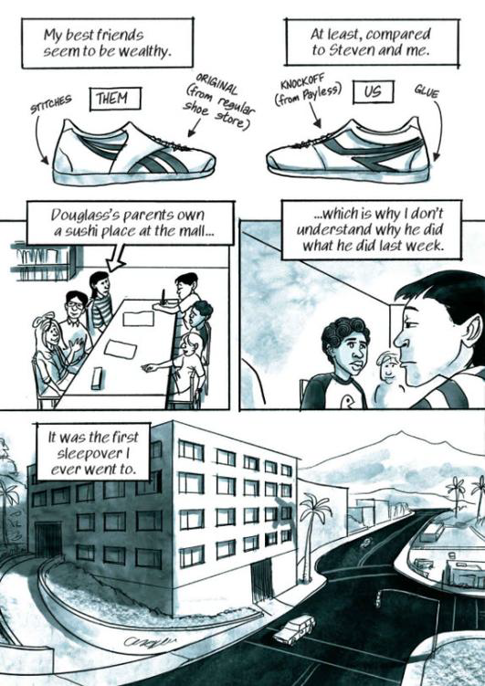
Page 104: In the first two panels, Darrin illustrates two shoes side-by-side that look very similar. He annotates their differences in terms of quality: glue vs. stiches and the idea of a "genuine" brand vs. a "knockoff" brand
The shoes represent a difference in wealth and privilege. From a distance--and on the page--the differences are hardly distinguishable. However, for Darrin, these are defining characteristics and are a constant reminder to himself in the ways in which we doesn't fit in or belong within the larger group. This feeling is echoed in his account of a D.A.R.E. police officer visiting the class. Darrin is certain that he is going to be singled out from the group to role play a drug dealer because he is black:
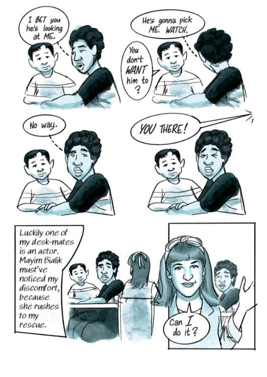
Page 111: Darrin is singled out in class by a D.A.R.E. police officer to play the drug dealer. Instead, Mayim Bialik (an actress who went to school with Darrin) volunteers.
In a classroom full of kids who are all around the same age, Darrin sees his defining characteristic as being his skin colour. There is a level of certainty and inevitability when Darrin says that the officer will be looking at him to play the drug dealer. Sung Min's response--"You don't WANT him to?"--shows us how Darrin and his peers move through the world differently. They have different expectations, both of others and for themselves.
Interestingly, Darrin recalls American actress Mayim Bialik coming to his "rescue" in that moment, and a little bit of online digging shows us that she remembers Bell as well!
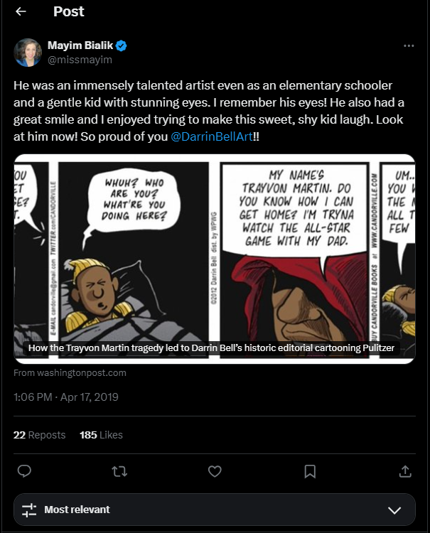
A post on X (formerly Twitter) by Mayim Bialik praising Darrin Bell's work. Image Source
There is, however, something that is unsettling me about this scene and gives me the "ick". While it is clear that Bialik had good intentions, the way in which her character and intervention are presented so fleetingly in Bell's larger narrative does call to mind a type of white saviour complex. The scene also highlights that a white student is able to play the role without fear of reprisal (socially or otherwise). For Bialik and others, this scenario is part of a game, but for Darrin, it is representative of a much larger problem around (sometimes willful) ignorance and a system that continues to perpetuate racism:
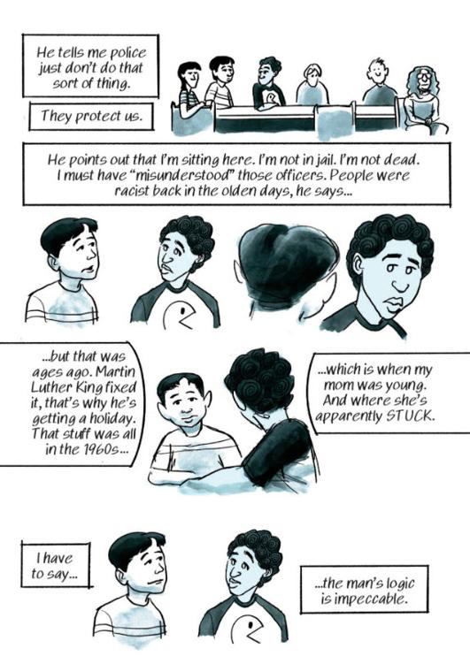
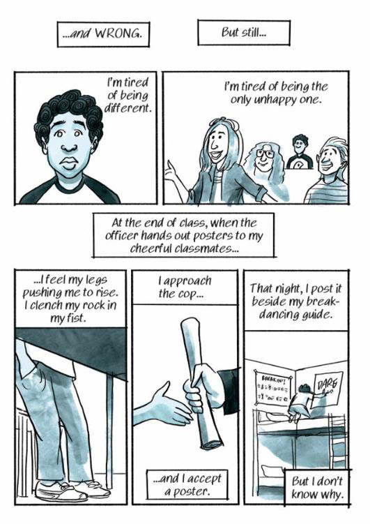
Pages 113-114: Darrin's experience of discrimination is dismissed by his friends because they claim that the police "just don't do that sort of thing." Despite how conflicted he feels, Darrin accepts a poster from the officer and hangs it up in his room that night.
You'll note on page 114 that Bialik and the other white students are smiling as the future actress gets up to play the role of the drug dealer. That level of carefree enthusiasm is not something that Darrin experiences, and the scene evokes cognitive dissonance in the reader by showing us Darrin behind the smiling students with an unreadable look on his face. This should be a positive, if not redeeming, moment in the narrative: someone finally notices Darrin and his discomfort and steps in to do something about it. However, the scene also makes it clear that Darrin does not share the same reality as these other students.
Throughout this section of the text, we see Darrin struggle with labels as a part of his identity as well. White people frequently identify him as "one of the good ones," based upon his academic successes. Chapter 7 ends with Darrin, on the heels of being called "one of the good ones" by his white female teacher, entering a pawn shop with the intent to purchase a knife. He contemplates how quickly people's narratives and perspectives of him seem to shift--how inconsistent and inconstant his social reality is. There is privilege, as Darrin notes, in being white and not having to wonder what being "one of the goods ones" actually means. His internal struggle is depicted in this scene as an internal dialogue in which he debates if he is one of the "good ones," what that title would mean, and how one achieves such a label.
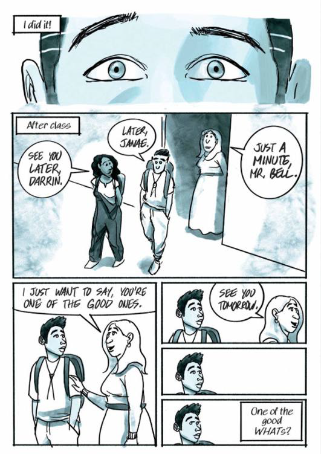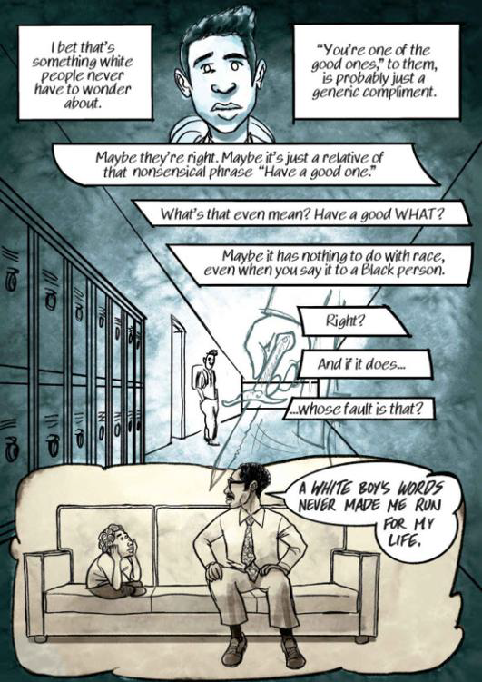
Pages 145-146: Darrin discusses his frustration over his teacher telling him that he is "one of the good ones," and the racial bias in that statement
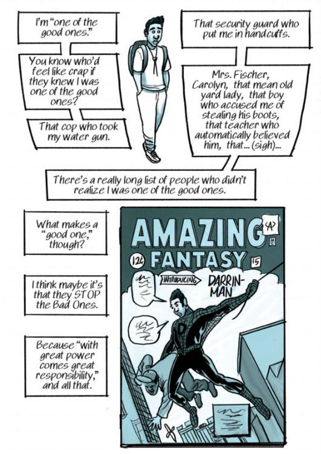
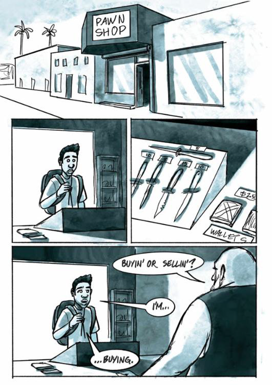
Page 147-148: Darrin heads into a pawn shop to purchase a knife, reflecting upon what makes someone one of the "good" ones.
But as the chapter ends, we can see that this internal conflict is far from being resolved for Darrin. Chapter 8 is entitled: "One of the Good Ones," and Bell begins to dissect this theme further for the reader as we watch Darrin head into adulthood.
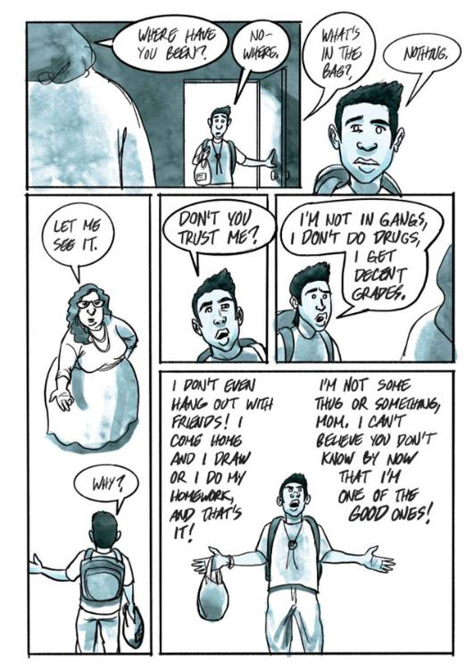
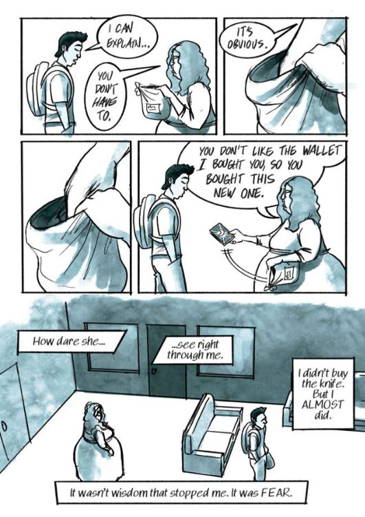
Pages 151,153: Darrin arrives home from the pawn shop and his mother wants to search his bag. He refuses, claiming that he is "one of the good ones. His mother reaches into the bag and pulls out a wallet, not a knife.
Darrin's decision not to buy a knife seems to be a threshold moment for him. Rather than choose to take up a weapon, such as a knife or a gun, to fight back against the system and oppression, Darrin chooses instead to take up his pen. During the scene where he publishes an article on installing metal detectors at schools, he recalls finding his voice through the school paper:
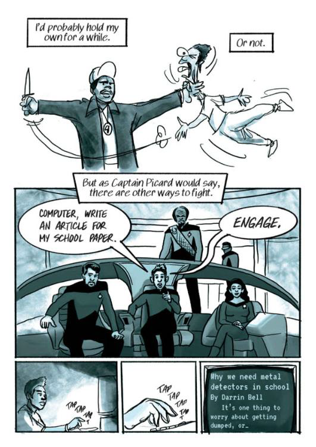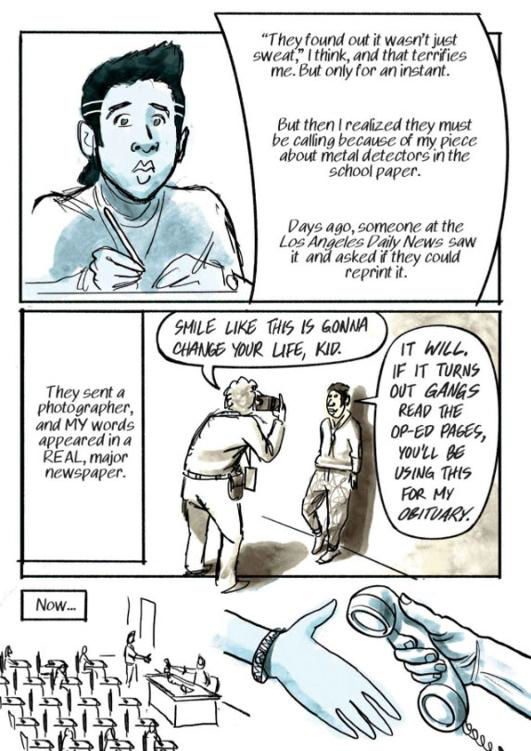
Pages 154, 157: Darrin writes an article for his school newspaper advocating for metal detectors. The white community is please and the story is picked up by a major newspaper.
We get an interesting tension here where Darrin begins to be heard by those around him, but not properly seen. His article gets publicity and gives him some sense of agency...
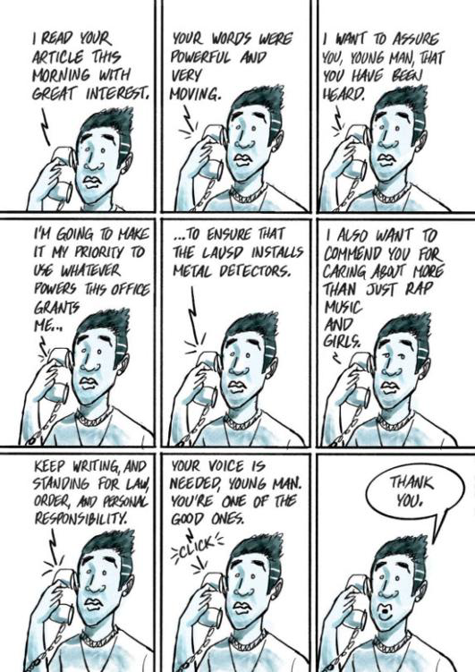
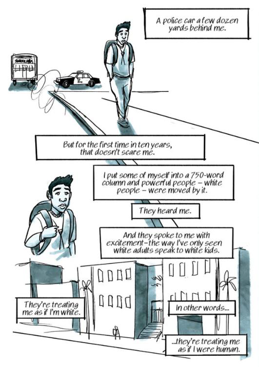
Pages 158, 161: After getting his essay published, people begin to speak to Darrin with a new level of respect and excitement, or the way that "white adults speak to white kids." He notes that he is being treated as if he were white and human.
However, at school, he still finds himself being "othered" and targeted for his blackness. While his physical characteristics mark him as different from those around him, writing gives him an outlet through which to speak. This tension calls attention to the hypocrisy of those around him: so long as he is speaking and acting in a way that is "appropriate," people seem at best willing to ignore his blackness under the guise that he is "one of the good ones"--someone who deserves to be treated as though he was white and, in his words, "human."
But the world is fickle, and in Chapter 9, Darrin shares a story of being caught cursing at school by the principal. The stark juxtaposition between this scene and the end of Chapter 8 is meant to be upsetting: just as we feel like Darrin is going to be okay and that people are beginning to look beyond biases, both Darrin and the reader are reminded quickly of his place in the pecking order that we discussed last week. This one act--one instance of using use of his voice and language "inappropriately"--shows us just how delicate his social acceptance is. How he is being treated by the white people around him is a façade (and one that, I would argue is meant to make white people feel better about themselves). Darrin's encounter with the principal shows us that he isn't white, and therefore, his blackness can be weaponized against him unfairly at any time.
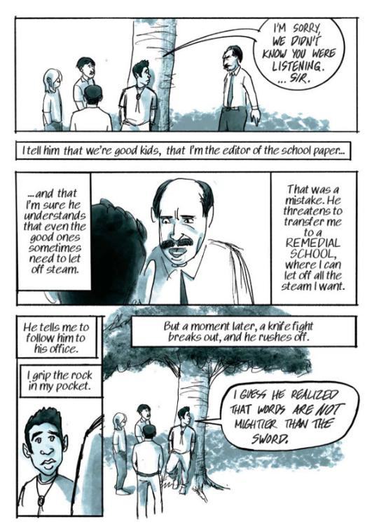
Page 165: Darrin gets in trouble from the principal for using inappropriate language while the other kids do not.
Chapter 10, however, sees Darrin and the reader finally address the rock that has been in his pocket the entire time. Entitled "Anything," this chapter functions as a transition chapter between childhood and adulthood. It takes place during the summer before Darrin begin university, and it represents letting go of the past to find and embrace the future. While the scene does centre around a summer fling with his friend, Marie, this relationship to is transitory: both know that they will have to let go of the relationship and each other in order to move forward. We see these transitions symbolized in Darrin's rock. He tells us that he carried it with him for most of his life. In situations where he feels unsafe, threatened, or uncomfortable, we see Darrin grip the rock as though it has the ability to protect him. By launching the rock into the ocean, Darrin seems to be casting off his fear and the emotional burdens that he has been carrying around with him:
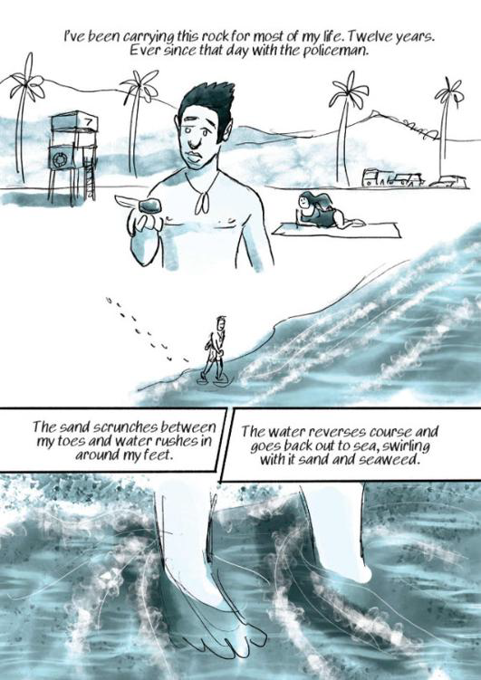
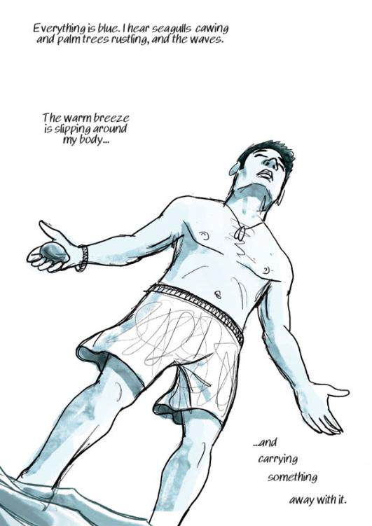
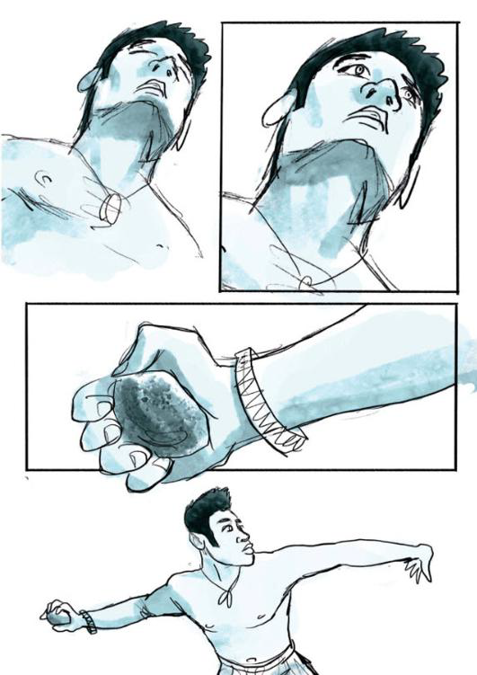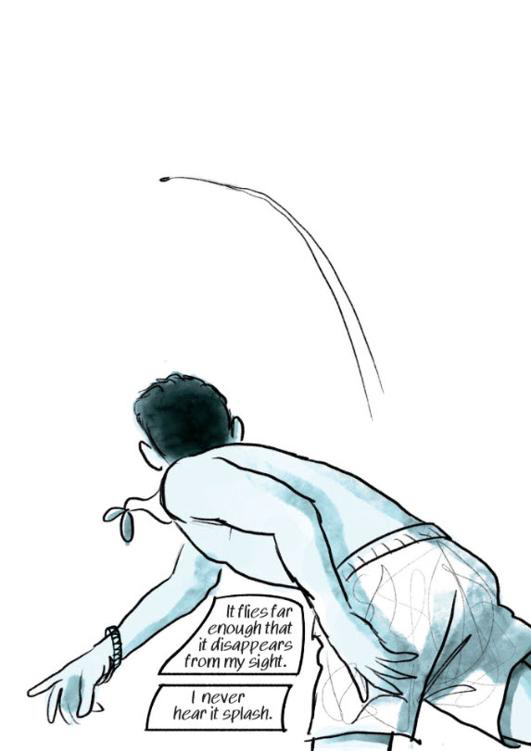
Pages 195-198: a four page spread in which we see Darrin releasing his fear by throwing his rock into the ocean.
As teenagers transition into adulthood, they encounter a series of losses and moments where they must leave things behind--friends, family, old identities, security, dreams, pain--in order to transition successfully into adulthood. In Darrin's case, we watch him let go of the things that weighed him down (symbolized by the rock). The very next scene, which is the beginning of Chapter 11, has the reader follow Darrin abruptly into adulthood by letting us experience something that most, if not all of us, will be familiar: being yelled at by a jerk.
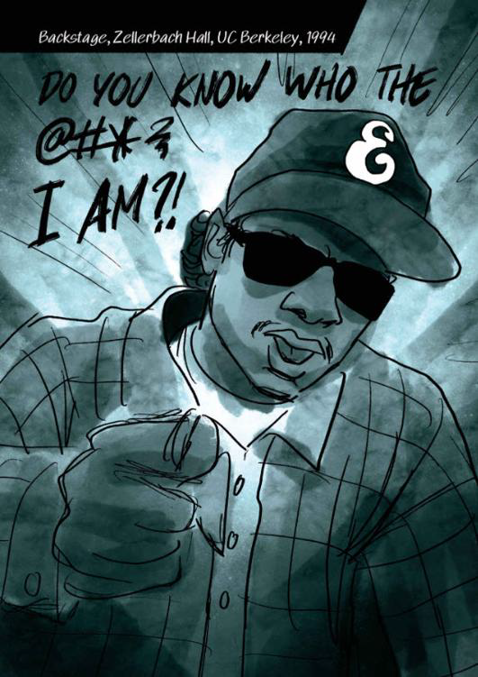
Page 200: A first-person, low angle shot of an angry black man yelling at Darrin while demanding "do you know who the f#*? I am?"
At this point, Darrin is "experiencing the real world." This phrase is one that adults say often to kids and teens to call attention to the fact that they have been sheltered and protected (relatively speaking) for their entire lives and are now coming of age and being exposed to the darker elements of the world. Now granted, Darrin was less sheltered and he was absolutely failed by many of the adults and authority figures in his life; however, the difference now is that he must learn to navigate these situations largely on his own. It's a painful phase through which he must go in order to become a self-actualized adult (a concept that comes from Maslow's Hierarchy of Needs).

Maslow's Hierarchy of Needs as a pyramid. From the bottom to the top, the levels go: physiological needs, safety needs, love/belonging, esteem, self-actualization. Image Source
You can learn more about Maslow's Hierarchy in the video (00:06:28) below:
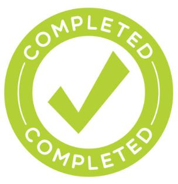
This completes the Week 3 Content Module. Thank you for participating!